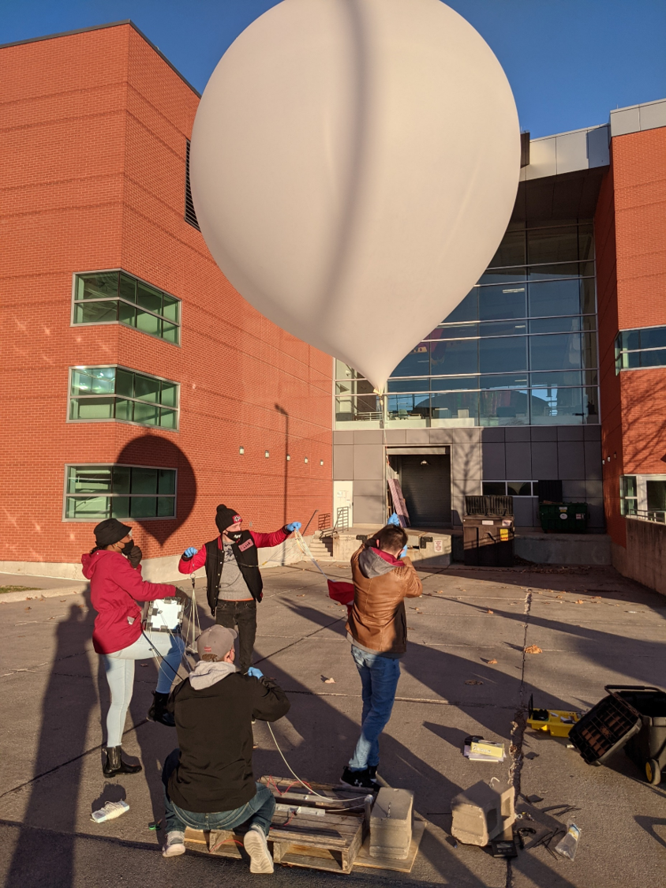
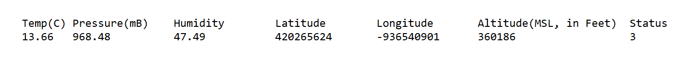
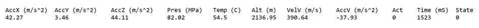
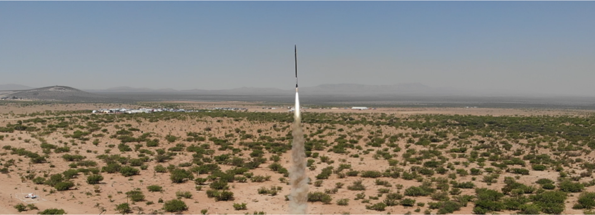
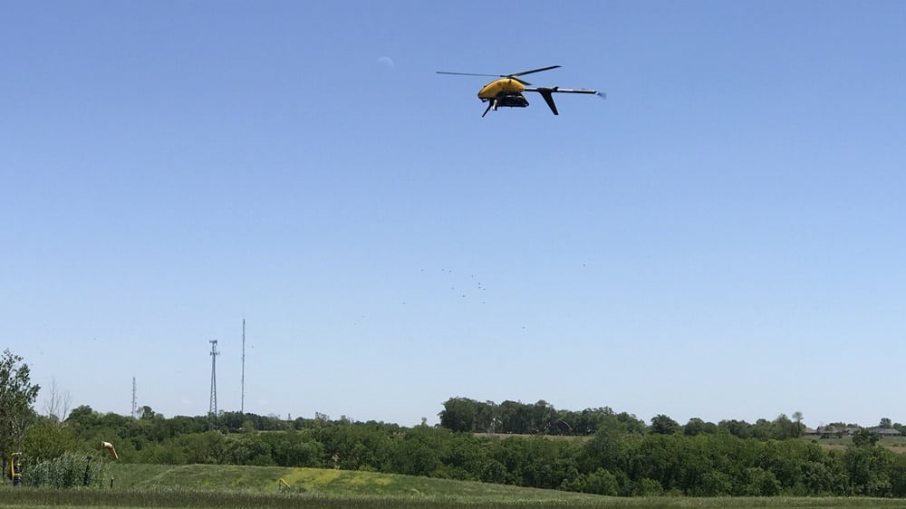
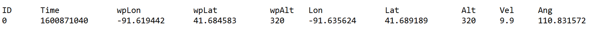
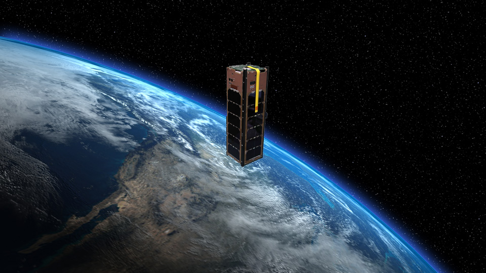
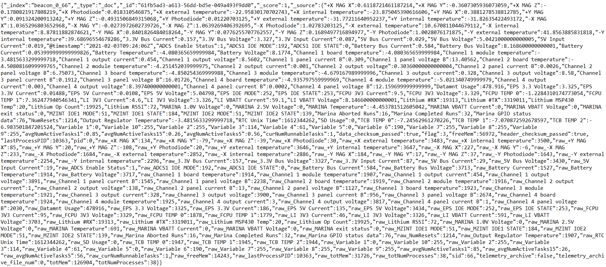

Elucidation and Analysis of Specification Patterns
in Aerospace System Telemetry
Zachary Luppen, Michael Jacks, Nathan Baughman, Muhamed Stilic, Ryan Nasers, Benjamin Hertz, James Cutler, Dae-Young Lee, and Kristin Yvonne Rozier
This webpage contains research artifacts from "Elucidation and Analysis of Specification Patterns
in Aerospace System
Telemetry" by Z. Luppen, M. Jacks, N. Baughman, M. Stilic, R. Nasers, B. Hertz, J. W. Cutler, D. Y. Lee, K. Y. Rozier
Aerospace Systems
We analyze and compare formal specifications for four separate aerospace systems: a high-altitude balloon, a sounding rocket, an unmanned aerial system (UAS), and a cube satellite. While not definitive examples of their respective systems, each of these aerospace projects collectively represent the majority of small-scale aerospace projects developed by universities, governments, amateur and commercial entities. In operation, each of these systems has a unique mission profile and its own set of requirements to determine mission success. As will be apparent in the specification elucidation and discussion, the systems we have made use of are progressively more complex, i.e., the sounding rocket has greater complexity than the high-altitude balloon in our study. This complexity scaling is not definitive of these aerospace systems. Depending on the developer's experience and expertise, their system could be more or less complex than another system designed by another developer.
HABET High-Altitude Balloon
The high-altitude balloon we utilized for our study was developed by the Make 2 Innovate laboratory located at Iowa State University as part of its High Altitude Balloon Experiments in Technology series. HABET was originally founded in 1993 by the Central Iowa Technical Society, and was eventually integrated into Iowa State University's Aerospace Engineering department under the auspices of M2I and the Iowa Space Grant Consortium. The goal of this program is to design, build, fly, and recover small payloads developed entirely by undergraduate students at ISU. A typical HABET payload and balloon is shown below.

The purpose of this specific HABET launch was to test the functionality of the NEO-M9N GPS module developed by SparkFun for future use on HABET missions and other ISU aerospace projects. The HABET team uses GPS devices so that the balloon's position throughout the mission can be broadcast back to a dedicated ground station. This information can then be delivered to the recovery team to aid in the search for the payload once it returns to Earth. International Traffic in Arms Regulations (ITAR) have strict requirements in place to ensure that Global Positioning System (GPS) units carefully follow their guidelines when operating at altitudes greater than 60,000 feet. GPS units that do not adequately implement these export control rules become inoperable at this altitude for safety reasons. This was the first HABET launch utilizing the SparkFun NEO-M9N, and after a brief analysis of the telemetry sent back from the payload, the mission was considered a success by the launch team. A sample collection of this telemetry is shown in the figure below

Additionally, regarding the operation of the HABET balloon there is no internal computer to pop the balloon, rather the balloon is designed to fail at ~100,000 ft.
Sounding Rocket
The sounding rocket, called Nova Somnium, that we utilized for our study was developed by the Cyclone Rocketry team at Iowa State University (ISU). Cyclone Rocketry is a student organization that works yearly to design, build, fly, and recover high-powered rockets. Its mission is to educate, challenge, and inspire Iowa State students along with the local community about rocketry, science and engineering, and space exploration.
Cyclone Rocketry developed Nova Somnium for the 2019 Spaceport America Cup near Las Cruces, New Mexico. It was built to reach an apogee altitude of 30,000 ft AGL, carrying onboard an experimental payload, a telemetry system that transmits back to a dedicated ground station, and an aerobraking control system (ACS). A sample collection of the telemetry transmitted by the rocket's flight computer is shown in the figure below.

The ACS intended to slow the rocket, whose motor was sized to overshoot the target, to hit a 30,000 ft apogee as precisely as possible. Figure 4 shows the Nova Somnium rocket launching at the Spaceport America Cup competition. Unfortunately, the ACS suffered a malfunction during flight -- as is detailed by the telemetry -- that led to an early brake deployment and a mechanical failure of the brake pads. This caused a sudden uncontrolled trajectory change that crippled the main parachute of the recovery system. Ultimately, the rocket crashed in the nearby desert where it was tracked down and deemed a total vehicle loss.

Unmanned Aerial System (UAS)
The unmanned aerial system (UAS) we utilized for our study is an AeroVironment (formerly produced by Pulse Aerospace) VAPOR 55 UAS and is greater detailed in CHHJR20. This specific UAS is owned and operated by the University of Iowa's Operator Performance Laboratory (OPL) in Iowa City, IA. This UAS weighs 55 lbs. and can cruise for 60 min. at an altitude of ~12,000 ft. Figure 5 shows the VAPOR 55 Helicopter UAS used for experimental evaluation by the OPL. UAS are quickly integrating into the National Air Space (NAS) over the United States, and the Federal Aviation Administration (FAA) expects their use to "expand rapidly" in the coming years. Given that this increased air traffic will likely produce congestion and safety concerns, there is a growing need to integrate UAS with intelligent, automated systems for UAS Traffic Management (UTM).

While the UAS flew around a designated testing area, it underwent a series of flight tests to measure performance and the system's ability to generate loss-of-separation (LOS) or en-route conflict alerts. A total of 20 flight plans, two of which had intentional fault-causing scenarios, were followed by the UAS, along with going through an extensive set of ground-based hardware-in-the-loop simulations. Three systems were mapped out where RV could be embedded into the UTM framework: onboard the VAPOR 55, each ground control system, and within the UTM cloud-based framework. The figure below shows an example of the data collected and transmitted by the Vapor55 UAS.

Cube Satellite
The cube satellite we utilized for our study, called the GEO-CAPE ROIC In-Flight Performance Experiment (GRIFEX), was developed by the Michigan eXploration Lab (MXL). GRIFEX, launched in January 2015 from Vandenberg Air Force Base in California, is a 3U cube satellite carrying a NASA Jet Propulsion Laboratory (JPL)-developed all-digital in-pixel high frame rate read-out integrated circuit (ROIC). The figure below shows an artist's concept of the GRIFEX cube satellite in-orbit. The high-throughput capacity of this ROIC will see later use in providing high spatial and spectral resolution measurements of atmospheric chemistry and transported pollutants with the Panchromatic Fourier Transform Spectrometer (PanFTS).

While cube satellites have a general lifetime of 1-2 years, GRIFEX has been in operation for over six years at the time of writing. This exceptional lifetime provides data on an additional and highly sought-after subject: long-duration performance degradation of cube satellites and effects from radiation. Radiation is a significant factor for large flagship-level missions developed by agencies such as NASA and ESA. So additional lengths are taken to ensure the hardware is radiation-hardened and resistant to effects for as long as possible. Since cube satellites are only in orbit for a year or two, relatively little attention is given (let alone actually available) to protect their hardware from radiation. Consequently, very little documentation and research has been performed to understand this problem. In 2020, performance degradation became apparent with the GRIFEX mission, as the telemetry started recording greater levels of off-nominal data points. Radiation is the likely cause of this decreased performance. However, without a comprehensive set of specifications for GRIFEX, we cannot clearly understand what systems have been affected. This work, therefore, also provides the first comprehensive set of specifications for GRIFEX, and for a cube satellite. Furthermore, the current method of analyzing GRIFEX telemetry involves having a ground station operator looks at a derivative set of parameters and make a set of determinations based on the values that a person sees. A sample of the GRIFEX telemetry is shown in Figure.
